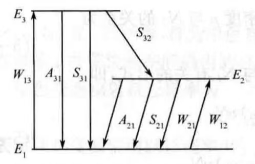
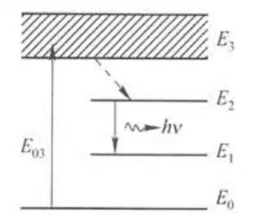
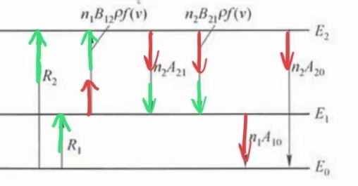

解释物质对光的吸收、色散；以及原子自发辐射及其谱线展宽等现象.
对光场：采用经典理论体系的Maxwell方程组描述.
对原子体系：采用量子力学描述.
在半经典理论的基础上，将光场也量子化.
可以解决激光光强的特性.
可以解决与光强有直接关系的若干问题，包括光强随时间的变化、增益饱和、瞬态特性、多模振荡、烧孔效应等.
不能计算谐振频率与锁模等问题.
不能解释激光的谱线加宽与光子统计特性等.
速率方程理论的出发点是原子的自发辐射、受激辐射与受激吸收概论的基本关系.
在光与物质的相互作用中，有如下公式：
$$\left(\frac{\mathrm{d}n_{21}}{\mathrm{d}t}\right)_{\mathrm{sp}} = A_{21}n_2$$ $$\left(\frac{\mathrm{d}n_{21}}{\mathrm{d}t}\right)_{\mathrm{st}} = W_{21}n_2$$ $$\left(\frac{\mathrm{d}n_{12}}{\mathrm{d}t}\right)_{\mathrm{st}} = W_{12}n_1$$ $$\frac{A_{21}}{B_{21}} = \frac{8\pi h \nu^3}{c^3} = n_\nu h\nu$$这个式子跟黑体辐射有关.
上述关系是建立在能级无限窄、自发辐射是单色辐射的假设上的.
频率\(\nu\)处的单色能量密度\(\rho_\nu\)实际指的是总的辐射能量密度，而\(A_{21}\)、\(W_{21}\)、\(W_{12}\)定义的跃迁概论实际指总跃迁概率.
事实上，由于谱线加宽，自发辐射并非单色的，在建立速率方程之前，需对上述关系式进行修正.
考虑谱线加宽的因素与线型函数的概念，可以定义三个单色Einsteins系数如下：
$$A_{21}(\nu) = A_{21}g(\nu, \nu_0)$$ $$B_{21}(\nu) = B_{21}g(\nu, \nu_0)$$ $$B_{12}(\nu) = B_{12}g(\nu, \nu_0)$$| $$A_{21}(\nu)$$ | 单色自发辐射跃迁概率 | 在总自发辐射跃迁概率\(A_{21}\)中，分配在频率\(\nu\)处单位频率间隔内的自发辐射跃迁概率. |
| $$\begin{align}&W_{21}(\nu)\\ = &B_{21}(\nu)\rho_\nu\\ = &B_{21}g(\nu, \nu_0)\rho_\nu\end{align}$$ | 单色受激辐射跃迁概率 | 在总受激辐射跃迁概率\(W_{21}\)中，分配在频率\(\nu\)处单位频率间隔内的受激辐射跃迁概率. |
| $$\begin{align}&W_{12}(\nu)\\ = &B_{12}(\nu)\rho_\nu\\ = &B_{12}g(\nu, \nu_0)\rho_\nu\end{align}$$ | 单色受激吸收跃迁概率 | 在总受激吸收跃迁概率\(W_{12}\)中，分配在频率\(\nu\)处单位频率间隔内的受激吸收跃迁概率. |
修正后\(n_2\)个原子中单位时间内发生自发辐射跃迁的原子总数为：
$$\begin{align} \left(\frac{\mathrm{d}n_{21}}{\mathrm{d}t}\right)_{sp} &= \int_{-\infty}^{+\infty}n_2A_{21}(\nu)\mathrm{d}\nu\\ &= n_2A_{21}\int_{-\infty}^{+\infty}g(\nu, \nu_0)\mathrm{d}\nu\\ &= n_2A_{21} \end{align}$$由此可见，谱线加宽对单位时间内自发辐射跃迁的原子数没有影响.
修正后\(n_2\)个原子中单位时间内发生受激辐射跃迁的原子总数为：
$$\begin{align} \left(\frac{\mathrm{d}n_{21}}{\mathrm{d}t}\right)_{st} &= \int_{-\infty}^{+\infty}n_2W_{21}(\nu)\mathrm{d}\nu\\ &= n_2B_{21}\int_{-\infty}^{+\infty}g_(\nu,\nu_0)\rho_\nu\mathrm{d}\nu \end{align}$$该积分一般情况下来说是较为复杂的，但对于激光器来说，由于激光是放大的受激辐射，具有高度单色性，因此激光器中的光波场基本上是准单色的，其谱线宽度远比发光粒子本身的自然线宽小得多.
此时可以将单色能量密度表示为\(\delta\)函数的形式：
$$\rho_\nu = \rho\delta(\nu-\nu')$$\(\delta(\nu-\nu')\)：
在\(\Delta \nu'\)频率范围内，\(g(\nu,\nu_0)\)可近似看作常数\(g(\nu',\nu_0)\)，并根据\(\delta\)函数的性质，可以计算出上式如下：
$$\begin{align} \left(\frac{\mathrm{d}n_{21}}{\mathrm{d}t}\right)_{st} &= n_2B_{21}\int_{-\infty}^{+\infty}g_(\nu',\nu_0)\rho\delta(\nu-\nu')\mathrm{d}\nu\\ &= n_2B_{21}g(\nu',\nu_0)\rho \end{align}$$单位时间内发生受激吸收的原子数密度为：
$$\left(\frac{\mathrm{d}n_{12}}{\mathrm{d}t}\right)_{st} = n_2B_{12}g(\nu',\nu_0)\rho$$综上，频率为\(\nu\)的单色辐射场作用下，受激跃迁的概率为：
$$W_{21} = B_{21}g(\nu,\nu_0)\rho$$ $$W_{12} = B_{12}g(\nu,\nu_0)\rho$$上两式的物理意义为：由于谱线加宽，与原子相互作用的单色光频率\(\nu\)不一定要精确等于原子发光的中心频率\(\nu_0\)才能产生受激跃迁，而是在\(\nu=\nu_0\)附近的一个频率范围内都能产生受激跃迁；受激跃迁概率按线型函数分布，当\(\nu = \nu_0\)时，跃迁概率最大；当\(\nu\)偏离\(\nu_0\)时，跃迁概率急剧下降.
若激光器内第\(l\)模的光子数密度为\(N_l\)，则单色光能量密度\(\rho\)与\(N_l\)的关系为：
$$\rho = N_lh\nu$$利用Einstein关系式：
$$B_{12}g_1 = B_{21}g_2$$ $$\frac{A_{21}}{B_{21}} = \frac{8\pi h\nu^3}{c^3}$$可以将受激跃迁概率改写为与\(N_l\)有关的形式：
$$W_{21} = \frac{A_{21}}{n_\nu}g(\nu,\nu_0)N_l = \sigma_{21}(\nu,\nu_0)vN_l$$ $$W_{12} = \frac{g_2}{g_1}\frac{A_{21}}{n_\nu}g(\nu,\nu_0)N_l = \sigma_{12}(\nu,\nu_0)vN_l$$频率\(\nu\)的函数，具有面积的量纲.
将工作物质中每个发光粒子视为小光源，所发光强即该粒子所在处光强，而发射截面就是此光源的横截面积.
频率\(\nu\)的函数，具有面积的量纲.
若激光工作物质还未形成集居数反转，此时激光介质不但没有放大作用，还会对入射激光产生吸收作用，使光强减弱，此时工作物质中每个吸收光强的粒子视为一个小光栏，它将入射到介质中的光挡掉，而吸收截面就是这个小光栏的横截面积.
中心频率处的发射截面与吸收截面最大.
均匀加宽工作物质中心频率\(\nu = \nu_0\)处的发射截面为：
$$\sigma_{21} = \frac{A_{21}v^2}{4\pi^2\nu_0^2\Delta \nu_H}$$非均匀加宽工作物质中心频率\(\nu = \nu_0\)处的发射截面为：
$$\sigma_{12} = \frac{\sqrt{\ln 2}A_{21}v^2}{4\pi^{3/2}\nu_0^2\Delta\nu_D}$$发射截面与吸收截面决定于介质激光跃迁本身的性质，其峰值通常可在有关手册中查阅.
每个激光振荡模式都是具有一定频率\(\nu\)（模式谐振频率）与一定腔内损耗的准单色光.
下面讨论激光器中只有第\(l\)个模式振荡时的单模方程.
通过泵浦实现能级间粒子数反转所采用的能级结构可以归结为两种：
参与激光产生过程的有三个能级.
[注]E3实际上通常不是单一的能级，而是比E2高的一些激发态能级.

激励源作用下，E1的粒子抽运到E3能级，粒子在单位时间内被抽运到E3的概率为\(W_{13}\).
光激励条件下，\(W_{13}\)即为受激吸收跃迁概率.
E3能级上的粒子\(n_3\)寿命很短，主要以无辐射跃迁（热弛豫）方式迅速转移到E2能级，概率为\(S_{32}\).
\(n_3\)也能以自发辐射（概率\(A_{31}\)）、无辐射跃迁（概率\(S_{31}\)）等方式返回E1.
对于一般的工作物质，有：
$$S_{31}, A_{31}\ll S_{32}$$E1能级与E2能级间存在四种跃迁：
处于E2能级的粒子比较稳定，寿命较长，因此\(A_{21}\)与\(S_{21}\)都很小，且通常\(A_{21}\gg S_{21}\).
抽运速率足够高时，下能级E1的粒子多于一半被抽运到上能级E2，就在E2与E1之间产生粒子数反转.

粒子从基态\(E_0\)抽运到吸收带\(E_3\)上后，由于非辐射跃迁转移到亚稳态的激光上能级\(E_2\)上.
激光的下能级\(E_1\)是一个激发态能级，在常温下基本是空的，粒子在能级\(E_1\)上寿命极短，很容易在\(E_2,E_1\)之间产生粒子数反转.
四能级系统（常用）所需的激励能量比三能级系统小得多，产生激光比三能级系统容易得多.
[注]\(\mathrm{d}n_1/\mathrm{d}t\)未列出，因为其不是独立的方程.
单位体积内的光子数.
若第\(l\)个模式内的光子数密度为\(N_l\)，该模式的光子寿命为\(\tau_{Rl}\)，则其光子数密度的速率方程为：
$$\frac{\mathrm{d}N_l}{\mathrm{d}t} = n_2W_{21} - n_1W_{12} - \frac{N_l}{\tau_{Rl}}$$[注]由于激光振荡过程中受激辐射远超自发辐射，因此上式忽略了进入\(l\)模内的少量自发辐射非相干光子.
若用受激发射截面与受激吸收截面表示\(W_{21}\)与\(W_{12}\)，三能级系统的速率方程可表示为：
$$\begin{cases} \frac{\mathrm{d}n_3}{\mathrm{d}t} = n_1W_{13}-n_3(S_{32}+A_{31})\\ \frac{\mathrm{d}n_2}{\mathrm{d}t} = -\left(n_2 - \frac{f_2}{f_1}n_1\right)\sigma_{21}(\nu,\nu_0)vN_l - n_2(A_{21}+S_{21}) + n_3S_{32}\\ n_1 + n_2 + n_3 = n\\ \frac{\mathrm{d}N_l}{\mathrm{d}t} = \left(n_2 - \frac{f_2}{f_1}n_1\right)\sigma_{21}(\nu,\nu_0)vN_l - \frac{N_l}{\tau_{Rl}} \end{cases}$$通常，定义\(\eta_1 = \frac{S_{32}}{S_{32} + A_{31}}\)表示E3能级向E2能级无辐射跃迁的量子效率.
\(\eta_1\)的物理意义为：由光泵抽运到E3的粒子，只有一部分无辐射跃迁到激光上能级E2，另一部分通过其他途径返回基态.
\(\eta_2 = \frac{A_{21}}{A_{21}+S_{21}}\)，为E2能级向基态跃迁的荧光效率.
\(\eta_2\)的物理意义为：到达E2能级的粒子，也只有一部分通过自发辐射跃迁达到E1能级并发出荧光，其余粒子通过无辐射跃迁回到E1能级.
\(\eta_F = \eta_1\eta_2\)为总量子效率，可以表示为：
$$\eta_F = \frac{发射荧光的光子数}{工作物质从光泵吸收的光子数}$$因此，速率方程也可写为以下形式：
$$\begin{cases} \frac{\mathrm{d}n_3}{\mathrm{d}t} = n_1W_{13}-\frac{n_3S_{32}}{\eta_1}\\ \frac{\mathrm{d}n_2}{\mathrm{d}t} = -\left(n_2 - \frac{g_2}{g_1}n_1\right)\sigma_{21}(\nu,\nu_0)vN_l - \frac{n_2A_{21}}{\eta_2} + n_3S_{32}\\ n_1 + n_2 + n_3 = n\\ \frac{\mathrm{d}N_l}{\mathrm{d}t} = \left(n_2 - \frac{g_2}{g_1}n_1\right)\sigma_{21}(\nu,\nu_0)vN_l - \frac{N_l}{\tau_{Rl}} \end{cases}$$该微分方程组用于描述四能级系统上粒子数密度随时间变化的速率方程组.
原则上可以由此计算出任意时刻各个能级上的粒子数，因而可以用于研究上下能级间粒子数反转的问题.
| 能级 | 粒子数密度 |
| 基态\(E_0\) | $$n_0$$ |
| 下能级\(E_1\) | $$n_1$$ |
| 上能级\(E_2\) | $$n_2$$ |

当激励能源开始工作后，以速率\(R_2\)将粒子由基态\(E_0\)抽运到\(E_2\)能级上，使\(E_2\)能级的粒子数密度以\(R_2\)速率增加.
同时它也以速率\(R_1\)将粒子由基态\(E_0\)抽运到\(E_1\)能级上.
[注]对\(E_1\)能级的抽运是不希望却无法避免的.
\(E_2\)能级在单位时间内粒子数密度的增加可由下式表示：
$$\frac{\mathrm{d}n_2}{\mathrm{d}t} = R_2 - n_2A_2 - (n_2B_{21} - n_1B_{12})\rho f(\nu)$$\(E_1\)能级在单位时间内粒子数密度的增加可由下式表示：
$$\frac{\mathrm{d}n_1}{\mathrm{d}t} = R_1 + n_2A_{21} - n_1A_1 + (n_2B_21 - n_1B_{12})\rho f(\nu)$$ $$\begin{cases} n=n_0+n_1+n_2+n_3 \\ \frac{\mathrm{d}n_0}{\mathrm{d}t}=n_1 S_{10}−n_0 W_{03}+n_3 A_{30} \\ \frac{\mathrm{d}n_2}{\mathrm{d}t}=−\left( n_2−\frac{f_2}{f_1}n_1\right)σ_{21}(ν,ν_0)v N_l−n_2(A_{21}+S_{21})+n_3 S_{32} \\ \frac{\mathrm{d}n_3}{\mathrm{d}t}=n_0 W_{03}−n_3(S_{32}+A_{30}) \\ \frac{\mathrm{d}N_l}{\mathrm{d}t}=\left(n_2−\frac{f_2}{f_1} n_1\right)σ_{21}(ν,ν_0)v N_l−\frac{N_l}{τ_{Rl}} \end{cases}$$由于\(n_3\)很小，\(n_3W_{30}\ll n_0W_{03}\)，上式忽略了\(n_3W_{30}\)项.
\(\\frac{\mathrm{d}n_1}{\mathrm{d}t}\)的速率方程未列出，因为其不是独立的.
四能级系统中E3能级向E2能级跃迁的量子效率
$$\eta_1 = \frac{S_{32}}{S_{32} + A_{30}}$$四能级系统中E2能级向E1能级跃迁的荧光效率
$$\eta_2 = \frac{A_{21}}{A_{21} + S_{21}}$$总量子效率
$$\eta_F = \eta_1\eta_2$$上述三式的物理意义与三能级系统相同.
若激光器中有\(m\)个模振荡，其中第\(l\)个模的频率、光子数密度、光子寿命分别为\(\nu_l\)、\(N_l\)与\(\tau_{RL}\).
则E2能级的粒子数密度速率方程为：
$$\frac{\mathrm{d}n_2}{\mathrm{d}t} = - \sum_l\left(n_2-\frac{g_2}{g_1}n_1\right)\sigma_{21}(\nu_l,\nu_0)vN_l - n_2(A_{21} + S_{21}) + n_3S_{32}$$由于每个模式的频率、损耗、\(g(\nu_l,\nu_0)\)值不同，必须建立\(m\)个光子数密度速率方程.
其中第\(l\)个模的光子数密度速率方程为：
$$\frac{\mathrm{d}N_l}{\mathrm{d}t} = \left(n_2 - \frac{g_2}{g_1}n_1\right)\sigma_{21}(\nu_l,\nu_0)vN_l - \frac{N_l}{\tau_{Rl}}$$多模速率方程的解非常复杂，在处理一些不涉及各模差别的问题时，为简化问题，做如下假设：
1、假设各个模式的衍射损耗比腔内工作物质的损耗及反射镜的透射损耗小得多，因而可以认为各个模式的损耗是相同的.
2、将线型函数\(g(\nu,\nu_0)\)用一矩形谱线\(g'(\nu,\nu_0)\)代替